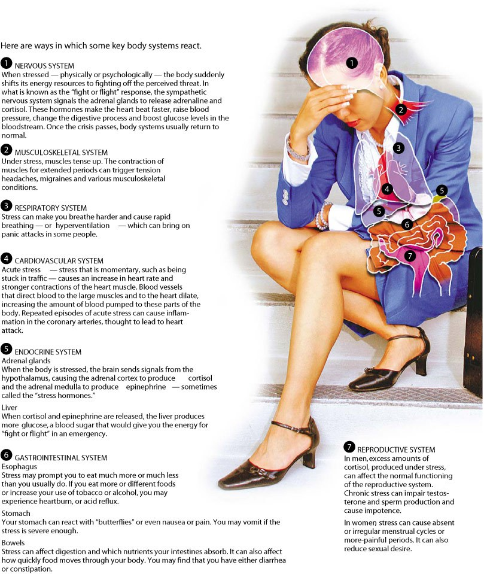

Stress Disorders
As demonstrated in the above list, stress can have wide ranging effects on emotions, mood and behavior. Equally important but often less appreciated are effects on various systems, organs and tissues all over the body, as illustrated by the following diagram.

Heart disease:
Researchers have long suspected that the stressed-out, type A personality has a higher risk of high blood pressure and heart problems. We don't know why, exactly. Stress can directly increase heart rate and blood flow, and causes the release of cholesterol and triglycerides into the blood stream. It's also possible that stress is related to other problems -- an increased likelihood of smoking or obesity -- that indirectly increase the heart risks.
Doctors do know that sudden emotional stress can be a trigger for serious cardiac problems, including heart attacks. People who have chronic heart problems need to avoid acute stress -- and learn how to successfully manage life's unavoidable stresses -- as much as they can.
Asthma:
Many studies have shown that stress can worsen asthma. Some evidence suggests that a parent's chronic stress might even increase the risk of developing asthma in their children. One study looked at how parental stress affected the asthma rates of young children who were also exposed to air pollution or whose mothers smoked during pregnancy. The kids with stressed out parents had a substantially higher risk of developing asthma
Obesity:
Excess fat in the belly seems to pose greater health risks than fat on the legs or hips -- and unfortunately, that's just where people with high stress seem to store it. "Stress causes higher levels of the hormone cortisol," says Winner, "and that seems to increase the amount of fat that's deposited in the abdomen."
Headaches:
Stress is considered one of the most common triggers for headaches -- not just tension headaches, but migraines as well.
Depression and anxiety:
It's probably no surprise that chronic stress is connected with higher rates of depression and anxiety. One survey of recent studies found that people who had stress related to their jobs -- like demanding work with few rewards -- had an 80% higher risk of developing depression within a few years than people with lower stress.
Accelerated aging:
There's actually evidence that stress can affect how you age. One study compared the DNA of mothers who were under high stress -- they were caring for a chronically ill child -- with women who were not. Researchers found that a particular region of the chromosomes showed the effects of accelerated aging. Stress seemed to accelerate aging about 9 to 17 additional years.
Find Help
Helping Resources
Articles
Self Improvement